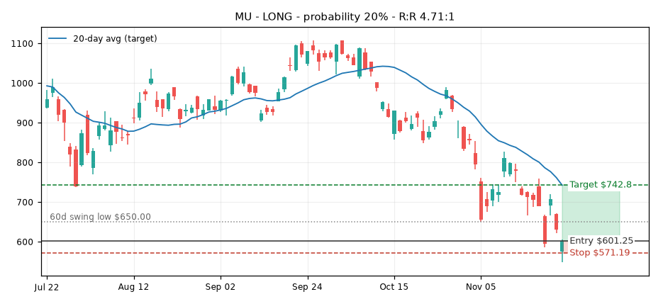
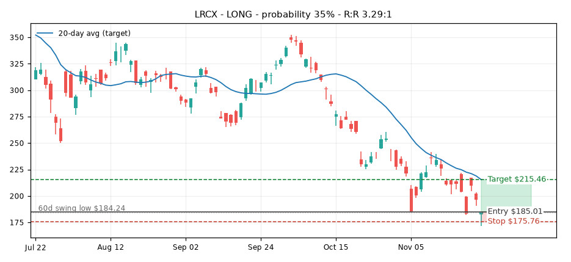
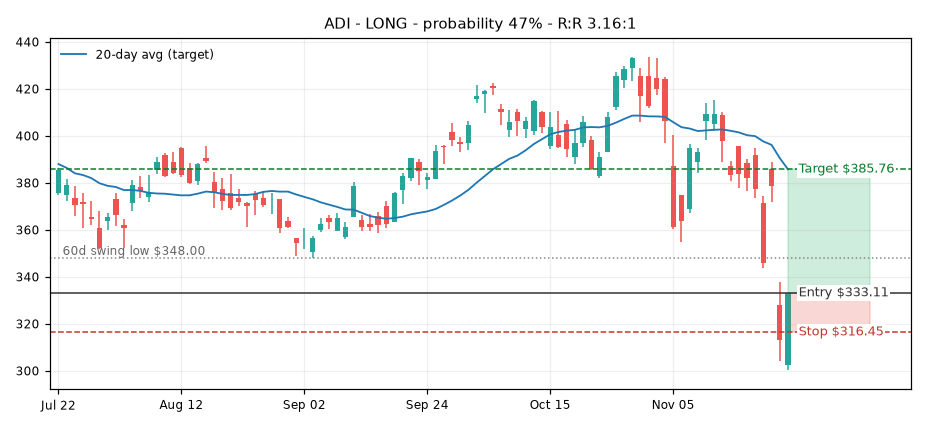
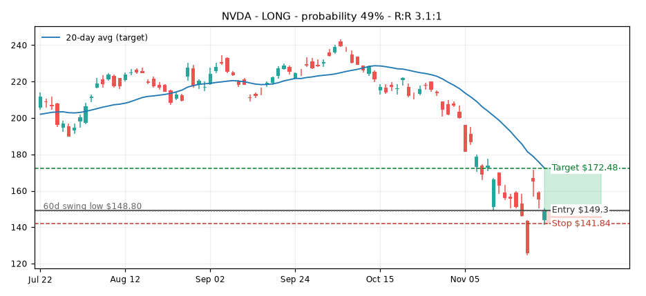
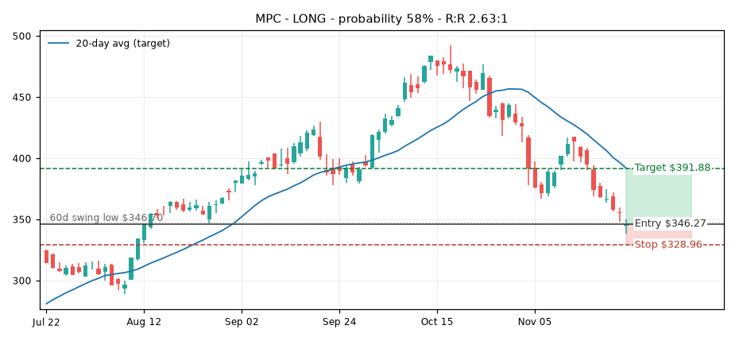
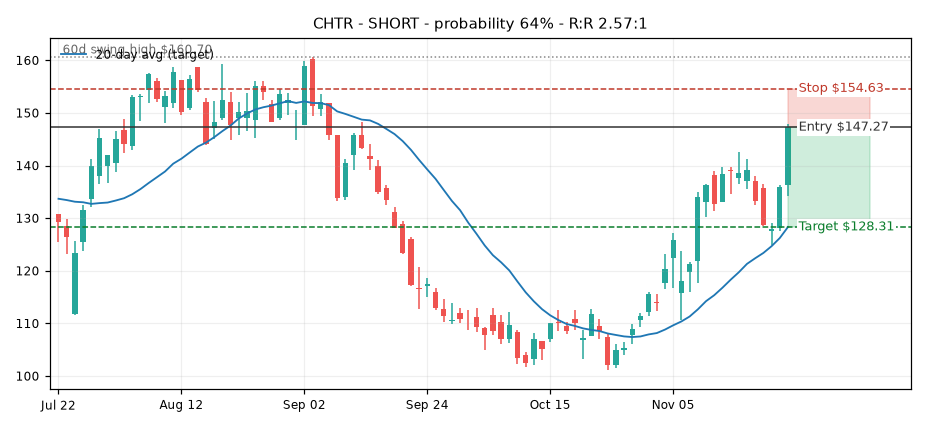
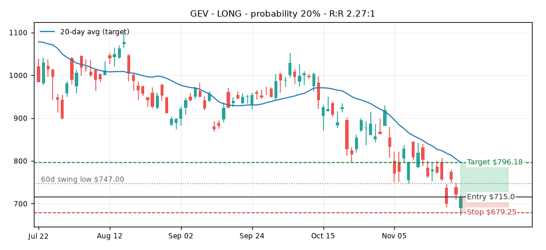

Last updated: 2026-11-25
Live track record: 1241 closed picks, 33% win rate. Average predicted probability 41% vs actual 33% (66 decided). 83 still open. Full track record →
| Ticker | Sector | Dir | Price | RSI(7) | % vs 20D | Volume | Entry | Stop | Target | R:R | Avg Hold | Probability | Hist. win rate | Sample | Earnings |
|---|---|---|---|---|---|---|---|---|---|---|---|---|---|---|---|
| MU | Information Technology | LONG | $601.25 | 34.0 | -19.1% | 1.41x | $601.25 | $571.19 | $742.8 | 4.71:1 | 8.7 | 20% | 50% | 12 | 22d |
| LRCX | Information Technology | LONG | $185.01 | 34.6 | -14.1% | 1.43x | $185.01 | $175.76 | $215.46 | 3.29:1 | 5.0 | 35% | 50% | 8 | 63d |
| ADI | Information Technology | LONG | $333.11 | 36.6 | -13.6% | 1.39x | $333.11 | $316.45 | $385.76 | 3.16:1 | 8.6 | 47% | 70% | 10 | 84d |
| NVDA | Information Technology | LONG | $149.3 | 41.4 | -13.4% | 1.03x | $149.3 | $141.84 | $172.48 | 3.1:1 | 7.8 | 49% | 64% | 14 | 91d |
| MPC | Energy | LONG | $346.27 | 18.1 | -11.6% | 0.84x | $346.27 | $328.96 | $391.88 | 2.63:1 | 10.4 | 58% | 80% | 10 | 69d |
| CHTR | Communication Services | SHORT | $147.27 | 73.4 | 14.8% | 1.2x | $147.27 | $154.63 | $128.31 | 2.57:1 | 7.0 | 64% | 71% | 14 | 65d |
| P | Information Technology | LONG | $94.69 | 39.7 | -10.6% | 0.92x | $94.69 | $89.96 | $105.93 | 2.37:1 | 7.6 | 43% | 50% | 10 | 91d |
| GEV | Industrials | LONG | $715.0 | 35.6 | -10.2% | 1.22x | $715.0 | $679.25 | $796.18 | 2.27:1 | 8.6 | 20% | 50% | 14 | 63d |
| UNH | Health Care | LONG | $346.19 | 33.0 | -9.9% | 0.86x | $346.19 | $328.88 | $384.32 | 2.2:1 | 10.5 | 35% | 50% | 12 | 48d |
| VLO | Energy | LONG | $323.0 | 22.2 | -9.6% | 0.75x | $323.0 | $306.85 | $357.27 | 2.12:1 | 10.4 | 49% | 71% | 7 | 64d |
LONG = oversold, expected to bounce back up toward the 20-day average. SHORT = overbought, expected to pull back down toward the 20-day average. Stop-loss = 5% against the position. Probability = this ticker's historical win rate minus penalties when the chart structure is broken (hover for reasons). 🔥 means volume was 1.5x+ the 20-day average. Tickers with earnings due within 3 days are excluded. Macro events pulled live from a public economic calendar feed (high-impact USD events only). Mechanical screen only — check news before acting. Not financial advice.
Probability 50% → 20%: broke below 60d swing low (-15); below 200-day avg, downtrend (-8); lower highs and lower lows (-7)
Earlier signals on MU: 2026-11-20: ❌ hit stop -5.0% 2026-11-05: ❌ hit stop -5.0% 2026-11-04: ❌ hit stop -5.6%

Probability 50% → 35%: below 200-day avg, downtrend (-8); lower highs and lower lows (-7)
Earlier signals on LRCX: 2026-11-05: ❌ hit stop -5.0% 2026-11-04: ❌ hit stop -5.6% 2026-11-03: ❌ hit stop -9.1%

Probability 70% → 47%: broke below 60d swing low (-15); below 200-day avg, downtrend (-8)
Earlier signals on ADI: 2026-11-24: ⏳ still open 2026-11-20: ❌ hit stop -5.4% 2026-11-06: ✅ hit target +10.4%

Probability 64% → 49%: below 200-day avg, downtrend (-8); lower highs and lower lows (-7)
Earlier signals on NVDA: 2026-11-20: ⏳ still open 2026-11-19: ❌ hit stop -5.0% 2026-11-17: ❌ hit stop -5.0%

Probability 80% → 58%: broke below 60d swing low (-15); lower highs and lower lows (-7)
Earlier signals on MPC: 2026-11-24: ⏳ still open 2026-11-19: ❌ hit stop -5.0% 2026-11-04: ❌ hit stop -5.0%

Probability 71% → 64%: higher highs and higher lows (-7)
Earlier signals on CHTR: 2026-11-17: ❌ hit stop -5.0% 2026-11-10: ❌ hit stop -5.0% 2026-10-12: ✅ hit target +13.1%

Probability 50% → 43%: lower highs and lower lows (-7)
Earlier signals on P: 2026-11-20: ❌ hit stop -6.2% 2026-11-18: ✅ hit target +13.2%

Probability 50% → 20%: broke below 60d swing low (-15); below 200-day avg, downtrend (-8); lower highs and lower lows (-7)
Earlier signals on GEV: 2026-11-20: ⏳ still open 2026-11-05: ❌ hit stop -5.0% 2026-10-23: ❌ hit stop -5.0%

Probability 50% → 35%: below 200-day avg, downtrend (-8); lower highs and lower lows (-7)
Earlier signals on UNH: 2026-11-19: ⏳ still open 2026-11-18: ❌ hit stop -5.0%

Probability 71% → 49%: broke below 60d swing low (-15); lower highs and lower lows (-7)
Earlier signals on VLO: 2026-11-24: ⏳ still open 2026-11-06: ❌ hit stop -5.0% 2026-11-04: ❌ hit stop -5.0%